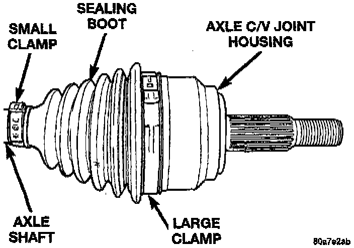
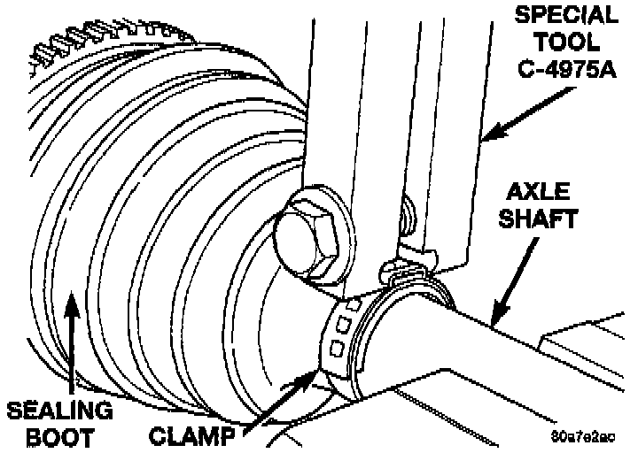
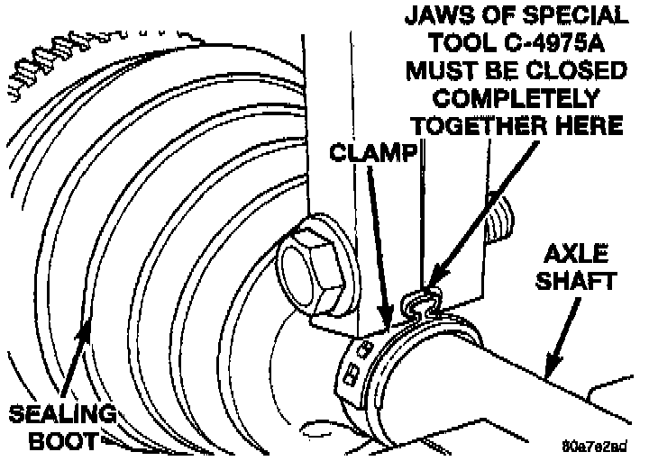
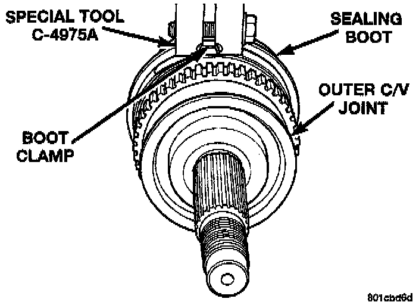

Constant Velocity Joint: Service and Repair
CAUTION: The only service procedure to be performed on the axle C/V joint, is the replacement of the joint seal boot. If any failure of internal axle shaft components is diagnosed during a vehicle road test, the axle shaft must be replaced as an assemblyREMOVAL
1. Remove axle shaft. See Service and Repair.
2. Remove large boot clamp retaining C/V joint sealing boot, to C/V joint housing and discard.
Outer CV Joint Seal Boot Changes:

3. Remove small clamp that retains outer C/V joint sealing boot to axle shaft and discard.
4. Remove sealing boot from outer C/V joint housing and slide it down and off the axle shaft.
5. Thoroughly clean and inspect axle C/V joint assembly and axle shaft for any signs of excessive wear. If any parts show signs of excessive wear, the axle shaft assembly will require replacement. Component parts of these axle shaft assemblies are not serviceable.
INSTALLATION
1. Slide new sealing boot large clamp over axle shaft and onto C/V joint.
2. Slide the axle C/V joint sealing boot onto the axle shaft.
3. Distribute 1/2 the amount of grease provided in seal boot service package into axle C/V joint assembly housing. Put the remaining amount into the sealing boot.
CAUTION: Do not use any other type of grease.
4. Install axle C/V joint boot small clamp evenly on sealing boot.
5. Position axle C/V joint boot into retaining groove in axle C/V joint housing. Then, install large retaining clamp evenly on sealing boot.
Clamping Tool Installed On Boot Clamp:

6. Clamp small sealing boot clamp onto axle shaft using Crimper C-4975-A. Place crimping tool C-4975-A over bridge of clamp.
Sealing Boot Retaining Clamp Installed:

7. Tighten nut on crimping tool C-4975-A until jaws on tool are closed completely together, face to face.
CAUTION: Seal must not be dimpled, stretched or out of shape in any way. If seal is NOT shaped correctly, equalize pressure in seal and shape it by hand.
Crimping Tool Installed On Large Boot Clamp:

8. Clamp large sealing boot clamp onto axle shaft using Crimper C-4975-A. Place crimping tool C-4975-A over bridge of clamp.
9. Tighten nut on crimping tool C-4975-A until jaws on tool are closed completely together, face to face.